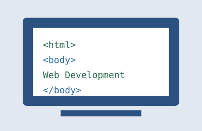

My Journey Into Web Development

My interest in web development started from wanting to understand how the websites I use every day are actually built. Learning HTML has helped me understand that a webpage is more than just something that appears on a screen. Every heading, paragraph, image and link has a purpose.
As I continue learning, CSS has become one of the most interesting parts of the process. It gives me the ability to take a basic HTML page and turn it into something organised and visually appealing. Learning about Grid, Flexbox and the box model has also helped me understand how different parts of a webpage work together.
I know there is still a lot for me to learn, but each project gives me another opportunity to improve. My goal is to keep practising and eventually become comfortable enough to create complete websites on my own.